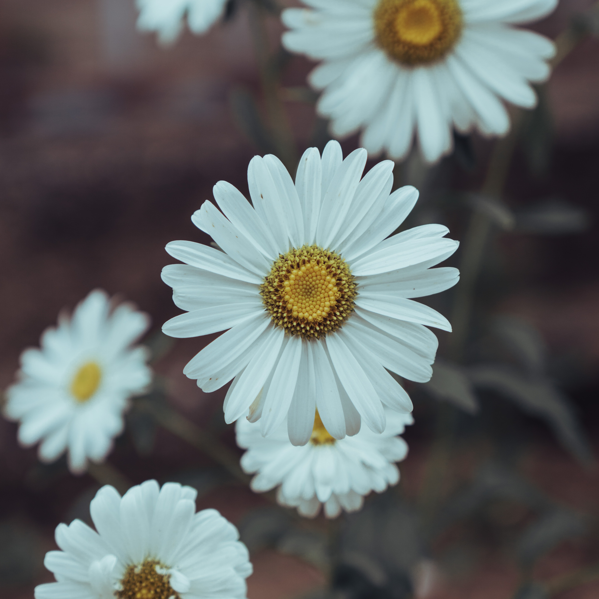

Imagens


Existem várias espécies de margaridas,
mas duas das mais populares são a "Bellis
perennis" (margarida-comum) e a "Leucanthemum
vulgare" (margarida-gerbera).
Elas variam em tamanho, cor e forma das pétalas.
As margaridas são nativas da Europa,
mas agora são encontradas em muitas
partes do mundo devido à sua popularidade.
As margaridas geralmente têm pétalas brancas
com um centro amarelo
ou
amarelo-claro, criando uma aparência clássica e reconhecÃvel. Algumas
variedades podem ter pétalas rosa ou amarelas.
As margaridas são flores resistentes e fáceis de cultivar.
Elas preferem sol pleno
ou luz solar parcial e solo bem drenado.
São ideais para jardins, canteiros de
flores e vasos.
Dependendo da espécie e da variedade,
as margaridas podem florescer na primavera,
verão ou até mesmo
durante o outono, dependendo do clima local.
As margaridas são frequentemente
associadas a simbolismos como inocência,
pureza,
amor verdadeiro e juventude. Elas são flores populares em buquês de casamento
e são
conhecidas por representar sentimentos sinceros.
Margaridas são frequentemente
usadas em arranjos florais
simples e alegres. Elas
podem ser combinadas com outras flores de cores vivas
para criar arranjos
encantadores.
Alguns lugares realizam festivais
anuais de margaridas, onde essas flores são
celebradas com exposições de jardins, concursos e atividades
relacionadas
à jardinagem.
Além das margaridas silvestres, existem variedades cultivadas,
como a
margarida-gerbera, que é conhecida por suas flores grandes e vibrantes.
As margaridas são atraentes para abelhas e borboletas,
ajudando na
polinização de outras plantas em seu jardim.
As margaridas podem ser
propagadas a partir de sementes ou dividindo
as plantas no inÃcio da primavera.
Com os cuidados adequados,
as margaridas podem florescer ano após ano,
tornando-as uma escolha duradoura para jardins perenes.
Embora as margaridas brancas sejam
as mais comuns, existem variedades com
pétalas amarelas, rosa e até mesmo vermelhas.
Algumas culturas tradicionalmente
usam partes das margaridas, como
folhas
e flores, para preparar chás com propriedades medicinais,
como calmantes ou
para tratar problemas de pele.
Você pode encontrar vasos de margaridas em floriculturas e
supermercados
por preços que variam de R$ 10 a R$ 50, dependendo do tamanho do
vaso e
da qualidade das plantas.
Se você deseja plantar margaridas a partir de bulbos, pode encontrá-los
em
pacotes que variam de R$ 5 a R$ 20, dependendo do número de bulbos no pacote.
Buquês de margaridas frescas podem ser encontrados em floriculturas
e
lojas de flores por preços que variam de R$ 20 a R$ 100, dependendo do
tamanho do buquê e da região.
Algumas pessoas preferem comprar mudas de margaridas para plantar
em
seus jardins. As mudas podem ser encontradas por preços que variam de
R$ 3 a R$ 10 por muda.
Se você quiser cultivar margaridas a partir de sementes, pode comprar
pacotes
de sementes de margarida por preços que variam de R$ 3 a R$ 15, dependendo
da quantidade
de sementes no pacote.
Em eventos de floricultura ou festivais de flores, os preços das margaridas
podem
variar dependendo da oferta e da demanda. Algumas variedades raras ou especiais
podem ter
preços mais altos.
Cultivar margaridas a partir de sementes, bulbos ou mudas pode ser uma
opção
econômica a longo prazo, uma vez que você investe inicialmente no plantio e, em
seguida,
pode desfrutar das flores ano após ano.